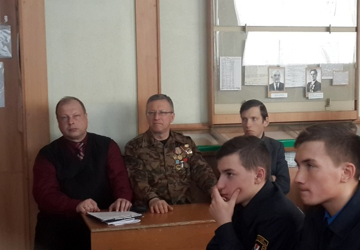
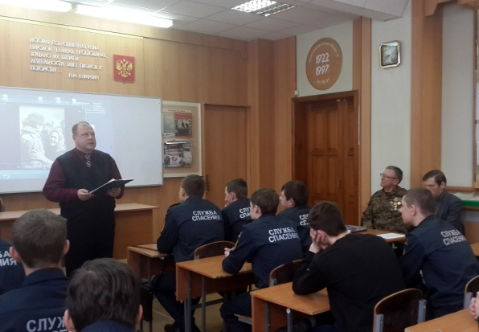
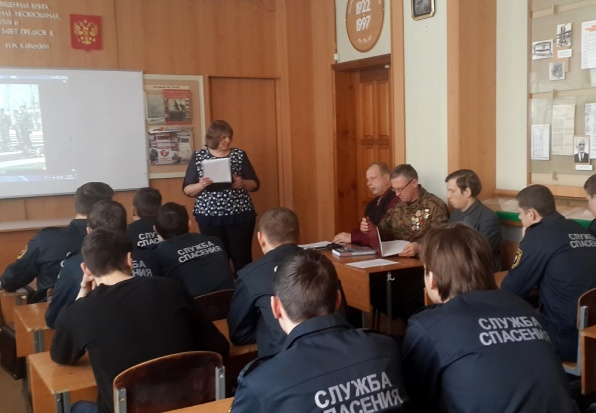
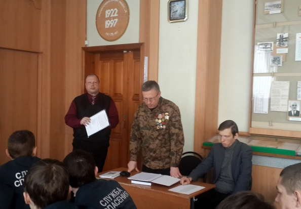
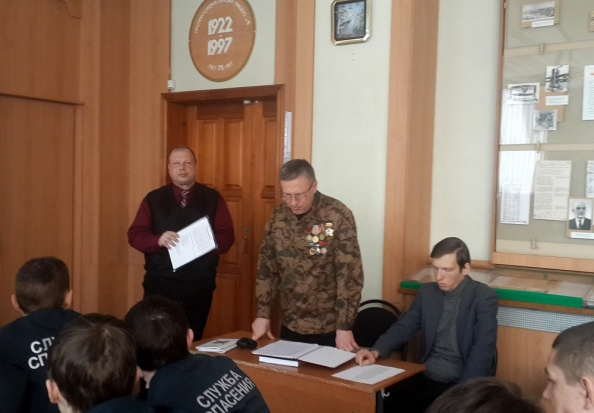

21 февраля 2017 года в государственном бюджетном профессиональном образовательном учреждении Воронежской области «Воронежском государственном промышленно-экономическом колледже» в рамках цикла мероприятий патриотического воспитания «О доблестях, о подвигах, о славе» состоялась встреча учащихся колледжа с членами ВГОО «СП «Воинское содружество» Дьяконовым А. С., Долгих М. Ю., Кашкиным С. Н., посвященная годовщине вывода советских войск из Афганистана.

Прозвучали воспоминания о боевых действиях советских войск в Афганистане, стихи, посвященные тем событиям. Присутствующими была дана личностная оценка подвигу советских солдат, проходивших службу в Афганистане. Мероприятие прошло на высочайшем организационном, техническом уровне, в удивительно доброжелательной обстановке, получив позитивный отклик у учащихся и администрации колледжа.
  
